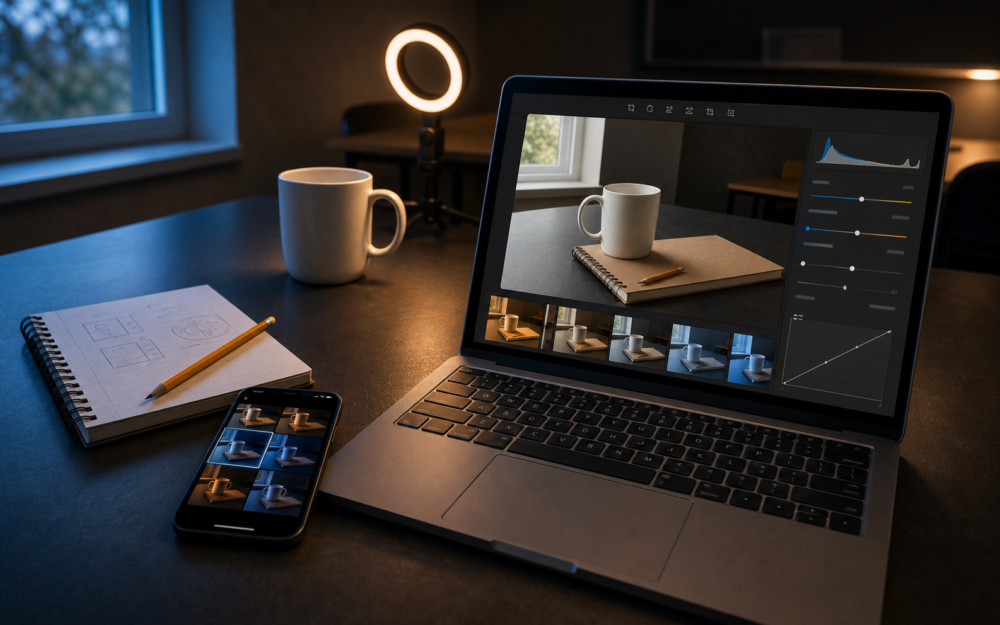
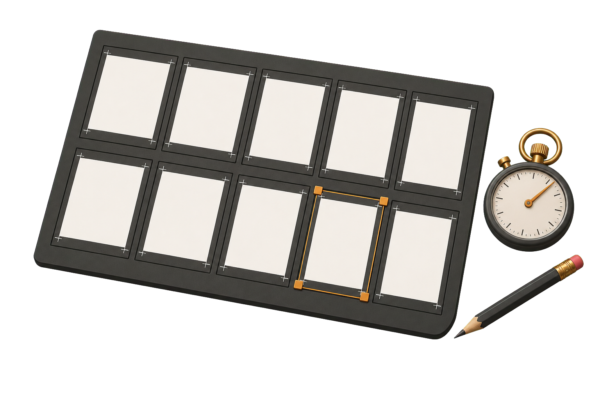

Defender ensaios fotográficos, ouvir feedback por critérios, realizar a recuperação e fechar a unidade curricular.
Exibir, defender e responder com base nas imagens.
Mesma atenção, mesmo critério, mesma postura.

Prova objetiva com conteúdos das Aulas 01 a 10, para toda a turma.